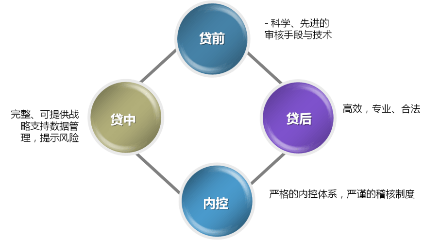

法律法规
以下是本网站（www.xyb100.com）及其运营公司信用宝金融信息服务（北京）有限公司（以下合称“本网站”）的隐私规则。
您成为本网站用户前务必仔细阅读本隐私规则并同意本隐私规则。作为本网站服务的正常操作程序的一部分，本网站收集、使用并（在一些情况下）向第三方披露有关您的资料。本隐私规则作为本网站服务协议的附件，在您注册成为本网站用户后立即生效，并对您及本网站产生约束力。
用户身份限制
未成年人（年龄18周岁以下人士）、限制行为能力人及自然人以外的组织无资格注册成为本网站用户并使用本网站的服务，本网站要求未成年人及各类组织不要向本网站提交任何个人资料。
涉及的个人资料
本网站收集个人资料的主要目的在于向您提供一个顺利、有效和度身订造的交易经历。本网站仅收集本网站认为就此目的及达成该目的所必须的关于您的个人资料。
本网站可能自公开及私人资料来源收集您的额外资料，以更好地了解本网站用户，并为其度身订造本网站服务、解决争议并有助确保在网站进行交易的安全性。
本网站按照您在本网站网址上的行为自动追踪关于您的某些资料。本网站利用这些资料进行有关本网站之用户的人口统计、兴趣及行为的内部研究，以更好地了解您以便向您和本网站的用户社区提供更好的服务。
本网站在本网站的某些网页上使用诸如“Cookies”的资料收集装置。“Cookies”是设置在您的硬盘上的小档案，以协助本网站为您提供度身订造的服务。本网站亦提供某些只能通过使用“Cookies”才可得到的功能。本网站还利用“Cookies”使您能够在某段期间内减少输入密码的次数。“Cookies”还可以协助本网站提供专门针对您的兴趣而提供的资料。
如果您将个人通讯信息（例如：手机短信、电邮或信件）交付给本网站，或如果其他用户或第三方向本网站发出关于您在本网站上的活动或登录事项的通讯信息，本网站可以将这些资料收集在您的专门档案中。
本网站对您的资料的使用
您同意本网站可使用关于您的个人资料（包括但不限于本网站持有的有关您的档案中的资料，及本网站从您目前及以前在本网站上的活动所获取的其他资料）以解决争议、对纠纷进行调停、有助于确保在本网站进行安全交易，并执行本网站的用户协议。本网站有时候可能调查多个用户以识别问题或解决争议，特别是本网站可审查您的资料以区分使用多个用户名或别名的用户。 为限制在网站上的欺诈、非法或其他刑事犯罪活动，使本网站免受其害，您同意本网站可通过人工或自动程序对您的个人资料进行评价。
您同意本网站可以使用您的个人资料以改进本网站的推广和促销工作、分析网站的使用率、改善本网站的内容和产品推广形式，并使本网站的网站内容、设计和服务更能符合用户的要求。这些使用能改善本网站的网页，以调整本网站的网页使其更能符合您的需求，从而使您在使用本网站服务时得到更为顺利、有效、安全及度身订造的交易体验。
您同意本网站利用您的资料与您联络并（在某些情况下）向您传递针对您的兴趣而提供的信息，例如：有针对性的广告条、行政管理方面的通知、产品提供以及有关您使用本网站的通讯。您接受服务协议和隐私规则即为明示同意收取这些资料。
本网站对您的资料的披露
本网站将采用行业标准惯例以保护您的个人资料，但鉴于技术限制，本网站不能确保您的全部私人通讯及其他个人资料不会通过本隐私规则中未列明的途径泄露出去。
本网站有义务根据有关法律要求向司法机关和政府部门提供您的个人资料。在您未能按照与本网站签订的服务协议、居间协议或者与本网站其他用户签订的借款协议的约定履行自己应尽的义务时，本网站有权根据自己的判断或者与该笔交易有关的其他用户的请求披露您的个人资料，并作出评论。
您对其他用户的资料的使用
在本网站提供的交易活动中，您无权要求本网站提供其他用户的个人资料，除非符合以下条件：
1.您已向法院起诉其他用户的在本网站活动中的违约行为；
2.与您有关的其他用户（包括交易关系、本网站登记的朋友关系）逾期未归还借款本息；
3.本网站被吊销营业执照、解散、清算、宣告破产或者其他有碍于您收回借款本息的情形。
如您作为出借人通过与借款人订立的借款合同获得借款人的个人身份信息，您同意不将该等个人信息用于除向借款人追索债权以外的其他任何用途，除非该等信息根据适用的法律规定、被有管辖权的 法院或政府部门要求披露。
电子邮件
您不得使用本网站提供的服务或其他电子邮件转发服务发出垃圾邮件或其他可能违反本网站的用户协议或隐私规则的内容。
如果你利用本网站的服务向没有在本网站内注册的电子邮件地址发出电子邮件，本网站除了利用该电子邮件地址发出您的电子邮件之外将不作任何其他用途。本网站不会出租或出售这些电子邮件地址。
密码的安全性
您须对使用您的用户名和密码所采取的一切行为负责。因此，本网站建议您不要向任何第三方披露您在本网站的用户名和密码。
规则修改
本网站可能不时按照您的意见和本网站的需要修改本隐私规则，以准确地反映本网站的资料收集及披露惯例。本规则的所有修改，在本网站于拟定生效日期前至少三十(30)日在网站公布有关修改通知。
本网站 2013年5月21日
本网站及APP是由信用宝金融信息服务（北京）有限公司建设并负责管理和运营。为了保障您的权益，您在自愿注册使用信用宝服务前，必须仔细阅读并接受本服务协议所有条款。一经注册或使用信用宝服务即视为对本服务条款的充分理解和接受，如有违反条款而导致任何法律后果的发生，您将以自己的名义独立承担相应的法律责任。
一、本协议的确认和接纳
1、信用宝是为互联网环境下的借贷交易提供信息中介和居间撮合服务的平台，您可通过注册账户在信用宝享受服务。
2、本协议描述信用宝与用户之间、用户与用户之间、用户与第三方服务（或监管）机构之间关于使用信用宝交易平台或通过网络环境之下为建立、变更、取消交易、违约及服务相关方面的权利义务。
3、除本协议另有规定的除外，用户与用户之间通过本APP程序在交易过程中发生的各项交易行为，在用户之间亦受本协议相应规定的约束。
4、如果您注册为信用宝用户，您使用帐号获取或登录信用宝的行为将视为对本协议的接受，并同意接受本协议各项条款的约束，承诺接受本协议并遵守本APP程序发布的各项相关规则的约束。
5、信用宝有权在必要时单方修改或变更本服务协议的内容，增加、减少、修改或变更各类规则，并将通过信用宝APP程序公布最新的服务协议及规则，不另作个別通知。变更后的协议或规则在公布后立即生效，亦成为本协议的一部分。若您于任何修改或变更本协议条款后继续使用信用宝服务，则视为您已认真阅读、充分了解并同意接受修改后的协议；若您不同意，则您应主动立即停止使用信用宝提供的服务。
二、信用宝的注册
1、信用宝服务仅向符合中华人民共和国大陆地区法律规定的具有完全民事权利和民事行为能力、能够独立承担民事责任的自然人和法人提供。若您不符合此等条件，请立即停止注册。
2、您必须依信用宝服务注册表的提示提供您本人真实、最新、有效及完整的资料。若您提供任何错误、虚假、过时或不完整的信息资料，或者信用宝有合理的理由怀疑您提供的资料为错误、虚假、过时或不完整，信用宝有权暂停或终止您的个人账户，并拒绝您使用信用宝服务的部份或全部功能。在此情况下，信用宝不承担任何责任，并且您同意自行负担因此所产生的直接或间接的任何支出或损失。
3、您在注册时除应提供自己的真实资料外，还须保证诸如电子邮件地址、联系电话、联系地址等内容的有效性及安全性，保证信用宝及其他用户可以通过上述联系方式与您进行联系。同时，您也有义务在相关资料实际变更时及时更新有关注册资料。因通过您注册的联系方式无法与您取得联系，导致您在使用信用宝APP程序服务过程中产生任何损失或增加费用或违约责任的，应由您完全独自承担。
4、若因您未及时更新您提供的资料，导致信用宝无法提供服务或提供服务时发生任何错误，您不得将此作为取消交易或拒绝履行义务的理由，信用宝亦不承担任何责任，所有后果应由您独自承担。
5、本协议条款及信用宝的任何其它的协议、告示或其它关于您使用信用宝指定的第三方支付平台服务的通知，您同意使用电子方式等类似的方式通知您。信用宝或相关权利方以电子方式发出前述通知之日视为通知已送达。因信息传输等原因导致您未在前述通知发出当日收到该等通知的，信用宝不承担责任。
6、您应该对您的账户（用户名）和密码的安全，以及对通过您的账户（用户名）和密码实施的行为负责。除非有法律规定或司法裁定，且征得信用宝的同意，否则账户（用户名）和密码不得以任何方式转让、赠与或继承（与账户相关的财产权益除外）。
7、为方便您使用信用宝服务及第三方服务（或监管）机构的其他服务（以下称其他服务），您同意并授权信用宝将您在注册、使用信用宝APP程序服务过程中提供、形成的信息传递给为您提供其他服务的第三方服务（或监管）机构，或从提供其他服务的第三方服务（或监管）机构获取您在注册、使用其他服务期间所提供及/或形成的信息。
8、您因获取信用宝服务、进行交易而发生的应纳税赋，以及一切硬件、软件、服务及其他方面的费用均由用户负责支付。
三、信用宝服务
1、信用宝服务包括但不限于查阅借贷交易机会、发布借款需求、提交资料、签订合同、查阅已签订合同、会员服务等，详情以信用宝提供的服务内容为准。基于运行和交易安全的需要，信用宝可以暂时停止提供、限制或改变信用宝服务部分功能，或提供新的功能。在任何功能减少、增加或者变更时，只要您仍然使用信用宝服务，表示您仍然同意本协议或者变更后的协议或服务。
2、您在信用宝所确认的交易状态将成为信用宝为您进行相关交易或操作的不可撤销的指令。您同意信用宝及/或第三方服务（或监管）机构有权按照相关指令并依据本协议及/或信用宝服务纠纷处理规则等约定对交易事项及/或款项等事项进行处理。您未能及时对交易状态进行修改或确认或未能提交相关申请所引起的任何纠纷或损失由您本人负责，信用宝及/或第三方服务（或监管）机构不承担任何责任。
3、信用宝部分服务仅面向通过认证的用户，具体详情以信用宝向认证或非认证客户开放的服务功能为准。因未能完成认证而无法享受相应服务造成的损失，信用宝不承担任何责任。
4、资金管理
信用宝不经手您的资金，您的资金通过“易宝支付”、“汇潮支付”或信用宝指定的其他第三方支付平台进行流转，信用宝仅提供信息对接服务。
5、合同管理
信用宝平台上借贷关系成立需订立的合同采用电子合同方式。通过信用宝账户签署的电子合同即视为您本人真实意愿并以您本人名义签署的合同，具有法律效力。您应妥善保管自己的账户密码等账户信息。您通过前述方式订立的电子合同对合同各方具有法律约束力，您不得以其账户密码等账户信息被盗用或其他理由否认已订立的合同的效力或不按照该等合同履行相关义务。如对电子合同真伪或电子合同的内容有任何疑问，您应在签署电子合同前通过拨打信用宝客服电话进行核对或了解。
四、风险提示
您了解信用宝APP程序上的交易系用户自行发布，且可能存在风险。您应充分理解包括但不限于如下之风险：
1、宏观经济风险：因宏观经济形势变化，可能引起价格等方面的异常波动，您有可能遭受损失；
2、政策风险：有关法律、法规及相关政策、规则发生变化，可能引起价格等方面异常波动，您有可能遭受损失；
3、违约风险：因其他交易方无力或无意愿按时足额履约，您有可能遭受损失；
4、不可抗力因素导致的风险；
5、因您的过错导致的任何损失由您自行承担，该过错包括但不限于：决策失误、操作不当、遗忘或泄露密码、密码被他人破解、您使用的计算机系统被第三方侵入、您委托他人代理交易时他人恶意或不当操作而造成的损失；
6、以上并不能涵盖从事交易的全部风险及市场的全部情形。您在做出交易决策前，应通过信用宝公布的信息及其他相关公告了解拟借贷行为的风险收益特征，并根据本人的目标、期限、风险承受能力和资产状况等谨慎决策，并自行承担全部风险。
五、服务费用
当您使用信用宝服务时，信用宝及/或第三方服务（或监管）机构会向您收取相关服务费用。各项服务费用请详见您使用信用宝服务时信用宝所列之收费方式说明。信用宝及/或第三方服务（或监管）机构保留具有单方面制定及调整服务费用之权利。
六、账户的暂停、注销、终止
1、您如发现有第三人冒用或盗用您的账号及密码，或其他任何未经合法授权的情形，应立即以有效方式通知信用宝，要求信用宝暂停相关服务，否则由此产生的一切责任由您本人承担。
2、您决定不再使用个人账号时，应首先清偿所有应付款项（包括但不限于本金、利息、违约金、服务费、管理费等），再将个人账号下所对应的可用款项（如有）全部提现或者向信用宝发出其它合法的支付指令，并向信用宝申请注销（永久冻结）该个人账号，经信用宝审核同意后可正式注销个人账户。
3、个人账户的暂停、注销或终止不代表您责任的终止，您仍应对您使用信用宝服务期间的行为承担可能的违约或损害赔偿责任，同时信用宝仍可保有您的相关信息。
七、个人义务
1、您承诺绝不为任何非法目的或以任何非法方式使用信用宝服务，并承诺遵守中国相关法律、法规及一切使用互联网之国际惯例，遵守所有与信用宝服务有关的网络协议、规则和程序。
2、您同意并保证不得利用信用宝服务从事侵害他人权益或违法之行为，若有违反者应负所有法律责任。
3、若您未遵守相关规定，信用宝有权作出独立判断并采取暂停或关闭您个人账号等措施，而无需承担任何责任。
八、系统服务中断或故障
基于互联网的特殊性，信用宝不担保服务不会中断，也不担保服务的及时性和/或安全性。系统因相关状况无法正常运作，使个人无法使用任何信用宝服务或使用任何信用宝服务时受到任何影响时，信用宝对您或第三方不负任何责任，前述状况包括但不限于：
信用宝系统停机维护期间；
电信设备出现故障不能进行数据传输的；
由于黑客攻击、网络供应商技术调整或故障、APP程序升级、第三方支付平台及银行方面的问题等原因而造成的信用宝服务中断或延迟。
因台风、地震、海啸、洪水、停电、战争、恐怖袭击等不可抗力因素，造成信用宝系统障碍不能执行业务的。
九、责任范围及限制
1、信用宝仅对本协议中所列明的信用宝应承担相关责任的义务承担责任。
2、信用宝服务的合作单位，所提供的服务品质及内容由该合作单位自行负责。
3、信用宝的APP程序内容可能涉及由第三方所有、控制或者运营的其他合作网站（以下简称“第三方网站”）。信用宝不能保证也没有义务保证第三方网站上任何信息的真实性和有效性。您确认按照第三方网站的服务协议使用第三方网站，而不是按照本协议。
4、您自信用宝及所属工作人员或经由信用宝服务取得的建议或资讯，无论其为书面或口头，均不构成信用宝对信用宝服务的任何保证。
5、除本协议另有规定外，在任何情况下，信用宝对本协议所承担的违约赔偿责任总额不超过向您收取的当次信用宝服务费用总额。
十、隐私权保护及授权条款
1、信用宝对于您提供的、信用宝自行收集的、经认证的个人信息将按照本协议予以保护、使用。
2、信用宝可能会公开私人资料来源收集您的额外资料，以更好地了解您的需求，并为您量身定制信用宝服务、解决争议并有助确保在信用宝进行安全交易。
3、信用宝按照您在信用宝网址上的行为自动追踪关于您的某些资料。在不透露您个人的隐私资料的前提下，信用宝有权对整个个人数据库进行分析并对个人数据库进行商业上的利用，如群发广告、群发产品信息等。
4、信用宝采用行业标准惯例保护您的个人资料，鉴于技术限制，信用宝不能确保您的全部私人通讯及其他个人资料不会通过本隐私规则中未列明的途径泄露出去。
5、信用宝有义务根据有关法律要求向司法机关和政府部门提供您的个人资料。由此可能造成的您的任何损失，信用宝不承担法律责任。
十一、条款的解释、法律适用及争端解决
1、本协议是由您与信用宝共同签订的，适用于您在信用宝的全部活动。本协议内容包括但不限于协议正文条款及已经发布的或将来可能发布的各类规则，所有条款和规则为本协议不可分割的一部分，与本协议正文具有同等法律效力。
2、本协议不涉及您与信用宝的其他个人之间，因网上交易而产生的法律关系及法律纠纷。但您在此同意将全面接受并履行与信用宝其他个人在信用宝签订的任何电子法律文本，并承诺按照该法律文本享有和（或）放弃相应的权利、承担和（或）豁免相应的义务。
3、信用宝对本协议拥有最终的解释权。
4、本协议及其修订的有效性、履行与本协议及其修订效力有关的所有事宜，受中国法律管辖，任何争议仅适用中国法律。
5、因本协议所引起的您与信用宝的任何纠纷或争议，首先应友好协商解决，协商不成的，您在此完全同意将纠纷或争议提交信用宝所在地有管辖权的人民法院诉讼解决。
本息保障
什么是风险准备金？
风险准备金指当理财人（借出者）投资的借款出现逾期时，信用宝将向理财人垫付当期借款未归还的出借本金和利息，从而为理财人营造一个安全的投资环境，保证投资人的本金安全。
理财人需要向信用宝支付本息保障的费用吗？
理财人无需支付任何费用，所有借出者都可以享受此服务。
如果我投资的借款发生逾期了，信用宝如何赔付？
当您投资的借款发生逾期后，信用宝将实时为您垫付您的本金和利息。
完善的合规管理制度
合规管理是信用宝通过设置风控合规管理岗位，制定和执行合规政策，开展合规监测和合规培训等措施，预防、识别、评估、报告和应对合规风险的行为。并引入多位拥有多年银行内控稽核经验的优秀人才，坚持全面风险管理，合规管理是全面风险管理的一项重要内容。
信用宝合规管理以“建立合规管理体系、完善合规管理制度、强化合规管理意识、防范系统合规风险”为重点，积极主动开展合规管理工作，完善合规管理制度的文件编写，积极开展合规培训、合规监测等工作。平台设有反洗钱内控管理制度，按照国家相关法律规定进行合规管理，有效降低运营操作风险。
严谨的风险控制流程
贷前—科学、先进的审核手段与技术
贷中—完整、可提供战略支持数据管理，提示风险
内控—严格的内控体系，严谨的稽核制度
贷后—高效、专业、合法
专业风控体系完善
1,资金分散出借
投资人通过信用宝平台的推荐进行出借，投资人的资金分散借给多个优质借款人，风险也同时被分散，比如30万的资金很可能被分散借给10个人，通过信用宝平台出借方式具有天然的低风险性。精准的平台数据量预测和稳健的市场开拓政策，极大地降低了资金流动性风险的出现。
2,严格的信用管理体系
借鉴美国三大信用管理机构目前都在使用的FICO（费埃哲）标准，结合中国国情，建立的创新个人信用风险管理咨询服务平台。通过国际先进的信用管理统计模型来评估个人信用情况，评价信用风险等级。
信用宝平台对每一位借款人客户进行科学的信审系统评分，对其还款意愿和还款能力进行过充分的考察，通过信用产品设计、信用数据分析挖掘、信用风险评估、信用增值方案设计、贷中流程管理、商帐管理等全程管理，来精准把握借款人的信用情况。
3,严格的审核流程
全面的贷前审核
(1)身份信息核对
(2)负面信息查询
(3)确认核实资料
(4)电话照会核查
(4)电话照会核查
(5)信用评分系统评估
与央行征信系统的对接：信用宝平台要求每一位借款人客户都必须提供其个人征信报告，并作为考察借款人客户信用情况的重要依据之一。平台对借款人的信用调查报告个人征信报告、工作证明、收入银行流水、房产证等居住证明、家庭情况等，一般采用材料调查、亲友电话调查、实地查勘等方式进行综合查访。
4,贷中贷后规范管理
平台建立了强大的贷中、贷后管理体系，保证了风险可控，贷中管理团队对还款期的客户进行不定期的回访，确保及时掌握客户的变动情况。贷后管理团队对不同阶段的违约客户采用不同的催收方式，如电话催缴、上门访问、法律诉讼等文明、合法的途径。
平台接受投资人的委托，提供还款管理服务，并定期跟踪分析借款人履行还款义务的情况，每月均会在固定时间收到债权列表及账单，作为后续与借款人合作的信用评价的重要因素。
以下是本网站及其运营公司信用宝金融信息服务（北京）有限公司，以下合称“本网站”)的VIP会员服务条款。您只要复选VIP认证页面中的“我已阅读并同意信用宝VIP会员服务条款”并按照本网站规定的VIP认证程序成功认证为VIP用户,您的行为既表示同意并签署了本条款，本条款则立即在您与本网站之间产生合同效力，您将有权依据本条款接受本网站的服务，同时有义务接受本条款的约束。
1.申请限制
本网站注册会员在本网站进行借款与投资的，要使用网站所有的功能，必须通过VIP认证，此为必备之条件。通过本网站VIP认证的注册会员为本网站VIP会员。
2.收费规则
本网站为VIP会员提供基本功能服务的收费标准为每个用户每年人民币168元，本网站可根据网站推广需要设置收费优惠期及变更收费标准，并会在变更之日起公示，请以实际申请认证时的收费标准为准。
本网站注册会员需保证在第三方支付平台账户开立的电子账户内有可用余额大于或等于VIP年费金额后，方可提交VIP申请，否则请通过包括第三方支付工具在内的其它方式充值后才能提交申请。
本网站收取VIP会员基本功能服务年费后，不论会员是否进行借款与投资等行为，该年费均不予退回。
VIP会员选择本网站提供的其它增值服务的，应根据本网站公布的其它增值服务的收费标准另行缴纳相关费用。
3.投资人VIP基本功能使用
成为本网站VIP会员，可以通过本网站进行投资，获得本网站提供的各项服务，并获得本网站专属客服的跟踪服务。本网站VIP会员根据具体投融资项目的相关协议，享有来自于本网站建立了合作关系的其他机构的服务。
4.VIP期限
会员VIP期限为一年，自申请成功之日起计算。
5.VIP期限延期
本网站注册会员所有的借款和投资行为必须在VIP有效期内，VIP期限届满前15天内，本网站注册会员可申请延期，经本网站审核通过并交纳新一期的VIP年费后，VIP期限于届满日起自动延期一年。本网站VIP会员未在前述期限内申请续费延期的，VIP会员服务功能自VIP期限届满起自动终止。
本网站注册会员的VIP会员服务功能终止后，可通过再次申请重启VIP会员服务。
6.VIP生效
在申请VIP会员认证时，您只要复选“我已阅读并同意信用宝VIP会员服务条款”并按照本网站规定的申请程序成功申请为VIP用户,您的行为既表示同意并签署了本条款， 本条款即在您和本网站之间产生法律效力。本条款不涉及您与本网站的其他用户之间因网上交易而产生的法律关系及法律纠纷。
7.规则修改
本网站有权不时按照实际需求，修改本VIP条款,以准确地反映本网站的会员权益。本条款的所有修改,本网站会在更改之日在本网站公示并即时生效。如您不同意本服务条款及/或本网站随时对其的修改，您应不使用或主动取消使用本网站提供的服务。否则，您的任何对VIP服务的使用行为将被视为您对本条款的完全接受。
合同编号：
甲方（出借人）：见如下列表
姓名: 信用宝用户名：
乙方（借款人）：
姓名：
身份证号：
信用宝用户名：
丙方（见证人）：信用宝金融信息服务（北京）有限公司
鉴于：
1. 丙方依据中华人民共和国法律成立并合法存续的有限责任公司，拥有www.xyb100.com 网站及“信用宝”APP（以下简称“该平台”）的经营权，提供信用咨询，为交易提供 信息服务；
2. 乙方已在该平台注册，并承诺其提供给丙方的信息是完全真实的；
3. 甲方承诺对本协议涉及的借款具有完全的支配能力，是其自有闲散资金，为其合法所得；并承诺其提供给丙方的信息是完全真实的；
4. 乙方有借款需求，甲方亦同意借款，双方有意成立借贷关系。
各方经协商一致，于：【 】签订如下协议，共同遵照履行：
第一条 借款信息
期限 |
出借日 |
到期日 |
每月还款日 |
|
|
|
|
出借人 |
出借金额 |
年利率 |
利息总额 |
|
|
|
|
|
|
|
|
第二条 还款方案
(一)还款计划：
期数 |
还款日期（当日23:59前） |
本金 |
利息 |
本期合计应还总额 |
|
|
|
|
|
|
|
|
|
|
(二)借款人承诺按照上表约定的时间和金额，按期足额向出借人还款。
第三条：各方权利和义务
(一)甲方的权利和义务
1. 甲方应按合同约定的借款日将足额的借款本金支付给乙方。
2. 甲方享有其所出借款项所带来的利息收益。
(二)乙方权利和义务
1. 乙方必须按期足额向甲方偿还本金和利息。
2. 乙方承诺所借款项不用于任何违法用途。
(三)丙方的权利和义务
1. 甲方委托丙方在本协议生效时通过有资质的第三方支付结算机构将该笔借款直接划付至乙方账户。
2. 甲乙双方委托丙方在本协议期间，协助乙方通过该第三方支付结算机构进行款项划扣以完成乙方每期的本息偿还义务。
3. 甲方委托丙方在有必要时对乙方进行违约提醒及催收工作，包括但不限于电话通知、发律师函、对乙方提起诉讼等，并且同意丙方对以上事项进行转委托。
4. 丙方接受甲乙双方的委托行为所产生的法律后果由相应委托方承担。如因乙方或甲方或其他方（包括但不限于技术问题）造成的延误或错误，丙方不承担任何责任。
5. 丙方应对甲方和乙方的信息及本协议内容保密；如任何一方违约，或因相关权力部门要求（包括但不限于法院、仲裁机构、金融监管机构等），丙方有权披露。
第四条 逾期违约
如乙方未能按照本协议第二条约定按时足额支付当期本金及当期利息，乙方应自逾期次日起同时承担以下两项责任（以下两项责任并不抵消乙方按照本协议第二条应支付的本金及利息）：
(一) 罚息
计算公式：罚息 = 所有未归还本息总额（包括当期及剩余期数）×罚息利率每日0.05%×逾期天数
说明：自逾期之日起，第二条的“年利率”调整为“罚息利率”，并逐日累计计算，计算基数为所有未归还本金及利息 。
(二) 逾期违约金
计算公式：逾期违约金 = 所有未归还本金（包括当期及剩余期数）×违约金费率5%
第五条 提前到期违约条款
(一) 若乙方出现下列违约情形之一，则乙方基于本协议项下所有义务立即提前到期：
1. 乙方主动申请提前到期，到期日为乙方提出申请日；
2. 乙方出现以下情形之一，本合同项下所有乙方义务自以下情形发生之日立即自动提前到期，提前到期日为情形发生之日：
1) 乙方成为民事诉讼被告（乙方可提供证据证明该诉讼不影响乙方履行本合同能力，并经丙方书面认可的除外）；
2) 乙方被刑事立案侦查；
3) 乙方提供给丙方以供审核的信息被证实为虚假；
4) 乙方个人或配偶财产被有权国家机关查封；
5) 以乙方为法定代表人的法人被宣告进入破产程序；
6) 乙方处于无法联系状态；
7) 乙方处于逾期状态，经丙方提醒催告还款事项，仍未能按照催告的时间足额归还的；
(二) 乙方义务立即提前到期的，乙方需支付当期利息及剩余所有本金。
(三) 若乙方未能在提前到期日足额支付当期利息及剩余所有本金，则需按照本协议的第四条的方式，以应支付的款项总额为基数计算罚息及逾期违约金。
第六条 清偿方式
1. 乙方在同意乙方网站账户及指定银行账户里的任何时间节点的所有余款均用于偿还本协议及《服务协议》项下款项，直到清偿完毕为止，与此同时，乙方委托授权丙方自主或者通过有资质的第三方支付结算机构进行划扣以偿还下述所示款项；
2. 本协议三方约定，在乙方资金不足以一次性清偿下述所有款项时，按照以下先后顺序进行清偿：
1) 追偿拖欠金额所支出的所有费用，包括但不限于律师费、仲裁费、诉讼费、公证费、交通通讯费等费用；
2) 罚息；
3) 逾期违约金；
4) 违约管理费（根据《借款咨询与管理协议》确定）；
5) 逾期管理费（根据《借款咨询与管理协议》确定）；
6) 拖欠的利息；
7) 拖欠的本金；
8) 拖欠丙方的账户管理费（根据《借款咨询与管理协议》确定）；
9) 正常的利息；
10)正常的本金；
3. 甲方委托丙方将乙方违约失信的相关信息及乙方其他信息向媒体、用人单位、公安机关、检察机关、法律机关披露，丙方不承担任何责任。
4. 在乙方还清全部上述10项费用之前，罚息、逾期违约金、违约管理费、逾期管理费的计算不停止。
5. 若甲方在本协议第六条中选择自行处理逾期借款，则本借款协议中的所有甲方与乙方之间的借款均是相互独立的，一旦乙方逾期未归还借款本息，任何一个甲方有权单独向乙方追索或者提起诉讼。
第七条 风险准备金及债权转让
1. 风险准备金由丙方根据借款人的整体违约状况设定风险准备金的提取比例，并有权进行适当的调整。
2. 当借款人发生违约时，甲方全体出借人协商一致选择【 方式A 】处置回款风险：
1) 方式A：由丙方风险准备金专用账户进行偿还：
逾期违约情形下风险准备金代偿范围为当期本金及当期利息，剩余期数仍有乙方按照约定偿还；提前到期违约，风险准备金代偿范围为当期利息及剩余所有本金。
2) 方式B：甲方自行向乙方追偿，丙方无需任何协助。
3. 风险准备金特别约定如下：
1) 风险准备金账户余额足以应付本息时，由风险准备金账户支付给甲方。
2) 风险准备金账户余额不足以支付应付本息时，则风险准备金专用账户的当期资金按照出借人出借金额比例进行分配，未得到分配的部分自动计入下一期还款日按照上述比例分配，以此类推，直到清偿完毕。
4. 若甲方选择方式A，甲、乙、丙三方达成如下债权转让约定：
1) 自甲方收到风险准备金偿还款次日零时起，甲方在受偿范围内的本金、利息权利自动转让给由丙方推荐的新债权人，该本金、利息按照本协议所产生的罚息、逾期违约金收取权利也一并转让给新债权人，由该新债权人享有该部分权利；若甲方收到风险准备金则本金利息收到了全额清偿，则甲方退出债权债务关系，由新债权人享有甲方基于本协议对于乙方的所有权利。甲方同意在此情形下的债权自动转让且不对丙方推荐的新债权人提任何异议。
2) 乙方签署本协议则表示知晓此情形下的债权自动转让行为并且表示同意，且愿意对以上新债权人履行依据本协议应履行之所有义务，乙方不得以未收到债权转让通知为由拒绝承认。
3) 该新债权人有权委托乙方开展任何必要的催收工作。
第八条 委托事项及信息披露约定
1. 甲方委托丙方代甲方在有必要时对乙方进行贷款的违约提醒及催收工作，包括但不限于电话通知、发律师函、对乙方提起诉讼等。甲方在此确认明确委托丙方为其进行以上工作，并授权丙方可以将此工作委托给其他方进行。乙方对前述委托的提醒、催收事项已明确知晓并应积极配合。
2. 丙方在信用宝网站披露风险准备金专用账户的整体信息情况，同时，如果甲方在此披露周期内得到风险准备金专用账户的补偿，将披露甲方的具体受偿情况，如需要，甲方应协助丙方进行由于借款人违约行为而产生的相关法律诉讼行为。
3. 甲方委托丙方在乙方出现违约情形时，可将乙方违约失信信息及乙方个人信息将任何其他方进行披露，该其他方包括但不限于：所有公共媒体、征信机构、公安司法机关、乙方用人单位等，披露信息形式包括但不限于：文字、照片、音频、视频。
4. 乙方承诺将完全履行合同约定义务，若出现违约行为同意以上委托及信息披露约定。
第九条 税款
协议各方因本协议产生的纳税义务，由各方自行向税务主管机关进行申报、缴纳。
第十条 保密
甲、乙、丙三方均应对本协议信息及其附件、《借款咨询与管理协议》及其附件保密，但第八条约定情形除外。
第十一条 附则
1. 甲方持有的本协议为电子版本并永久保存在丙方为此设立的专用服务器上备查，乙方、丙方持书面版本，各版本内容及效力相同
2. 本协议自文本最终生成之日生效。
3. 如果本协议中的任何一条或多条违反适用的法律法规，则该条将被视为无效，但该无效条款并不影响本协议其他条款的效力。
第十二条 法律及争议解决
本协议的签订、履行、终止、解释均适用中华人民共和国法律，并由合同签订地北京市东城区人民法院管辖。
【以下无正文】
乙方签字 丙方盖章
签署并生效日期：【 】 年【 】月【 】日
本协议由以下四方于 年 月 日在中华人民共和国北京市签署并履行。
甲方（出借人）：
证件类型：身份证□
证件号：□□□□□□□□□□□□□□□□□□
乙方：南京策诚信息科技有限公司
丙方：天津策诚科技有限公司
丁方：信用宝金融信息服务（北京）有限公司
鉴于：
1.甲方是具有完全民事行为能力，已在信用宝注册，拥有合法的资金来源，有通过信用宝平台将资金通过合法途径出借给资金需求人（以下称借款人）的意愿和能力的自然人。
2.乙方是依据中华人民共和国法律成立并合法存续的有限责任公司，具有投资管理、商务咨询服务、经济信息咨询资质，旗下运营“信用宝”平台（网址：http://www.xyb100.com/，APP：信用宝）。
3.丙方是依据中华人民共和国法律成立并合法存续的有限责任公司，具有投资咨询服务、商务信息咨询服务、经济信息咨询服务资质。
4.丁方是依据中华人民共和国法律成立并合法存续的有限责任公司，具有提供互联网信息服务的资质并拥有信用宝平台的经营权。
乙方与丙方均为信用宝金融信息服务（北京）有限公司 的全资子公司。
上述四方依据中华人民共和国的法律，经过友好协商，达成一致，订立如下协议，以兹信守。
第一条定义
1.1 本协议中下列词语具有以下含义：
1.1.1 出借人：指将自有合法资金自愿出借给他人的自然人或法人。
1.1.2 借款人：指具有合法资金用途自愿取得借款的自然人或法人
1.1.3 借款或资金或款项：指以人民币计量的货币。
1.1.4 本协议、本合同：指本《出借咨询与服务协议》以及各方就本《出借咨询与服务协议》约定事项共同签署的补充协议和相关文件。
1.1.5 债权：指在出借人与借款人借贷关系存续期间出借人拥有的全部权益，债权以人民币计价。
1.1.6 服务费：指基于本协议或与本协议相关的协议由乙方或丙方以自己所有的人、财、物为出借人提供信息咨询等服务而向出借人收取的以人民币计量的费用。
1.1.7 风险准备金：指为出借人的共同利益考虑，由丙方设立并管理、以丙方的名义单独开立的一个专用账户。从当期已实际收取的服务费中，按丙方管理的当期借款余额的一定比例提取的资金，该资金所有权属于丙方，由丙方设立专门账户计存。风险准备金的用途为：在借款人发生违约且造成出借人当期应收本金和应收利息不能收取的情况下，按照本合同约定的方式和比例以风险准备金先行向出借人支付，后期收取的前期已先行支付的款项计入当期风险准备金账户中由丙方所有。
1.1.8 工作日：指中华人民共和国政府规定的工作日期。
1.1.9 元：指中华人民共和国法定货币即人民币计量的单位。
1.1.10 送达：指本协议任意一方按照本协议约定的任一种送达方式将书面文件发出的行为。
1.1.11 推荐期：指本协议约定的由丙方推荐借款人的期限。
1.1.12 我国或中国：指中华人民共和国（不含港澳台地区）。
1.1.13 书面：指纸质文档、电子文档两种形式。纸质文档应通过快递或当面提交的方式送达，电子文档应通过《客户信息登记表》所记载的电子邮箱进行接收或发送。
1.1.14 恶意出借或收购债权：是指一人或受同一一致行动人控制的多人以自己的名义进行出借或收购本协议项下的相关债权超过乙方内部确认的一定限额，可能引发债权集中从而引发大范围的法律纠纷的行为。
1.1.15 资金出借服务期：指甲方在本协议确认的由乙方和丙方提供服务的期间，以本协议第十条约定的出借期间为准。本协议与《借款人列表》约定资金出借期间不一致的，以《借款人列表》规定的资金出借服务期间为准。
1.1.16 《借款协议》：指本协议甲方与乙方推荐的借款人共同签订的关于约定借款内容的协议，《借款协议》自签订之日起即成为本协议的附件。
1.1.17 《出借人债权转让协议》：指本协议甲方与乙方推荐的或者甲方自行寻找的债权受让人就债权转让事宜所签署的书面协议。
1.1.18 信用宝账户：出借人以自身名义在信用宝注册后系统自动产生的虚拟账户，通过第四方支付机构及/或其他通道进行充值或提现。充值：出借人将款项从其银行账户通过第四方支付机构及/或其他通道划转至信用宝账户的行为；提现：出借人将款项从信用宝账户通过第四方支付机构及/或其他通道划转至其银行账户的行为。
1.2 本协议的条款和标题仅为方便阅读，不影响本协议各具体条款正文内容的含义。
1.3 本协议约定的日期、期限的计算方式，除本协议明确规定外，以我国《民法通则》规定为准。
第二条 本协议签署的前提条件
2.1各方同意并正式签署本协议，包括所有附件内容。
2.2出借人的资金来源合法，不存在非法吸收存款、洗钱、诈骗、盗窃、赌博、贪污、受贿等我国法律或我国认可的国际公约禁止或犯罪的行为。
2.3 借款人的借款用途合法，借款款项不得用于我国法律或我国认可的国际公约禁止或犯罪的用途。
2.4在接受乙方和丙方的服务过程中，除了服务费和本合同约定的应收费用外，甲方不向任何除乙方和丙方之外的第其他方支付任何费用。
2.5丙方推荐借款人,推荐期为本协议签订之日起20个工作日。
第三条甲方权利和义务
3.1甲方应提供真实有效甲方名下银行账户作为本协议指定的充值及提现账户（以下简称“资金收支账户”）。充值及提现的资金收支账户应为甲方本人名下的同一个银行账户。
3.2甲方应在签署本协议的同时四方将其拟出借资金划转至信用宝账户，并授权丙方将出借资金从信用宝账户支付给借款人。
3.3推荐期内，甲方应确保信用宝账户可划扣余额大于本协议约定的出借金额。如果推荐期内因甲方原因导致本协议终止的，则甲方应按照约定初始出借金额的3%支付违约金给守约方。若推荐期满，丙方未能为甲方推荐甲方认可的借款人，丙方有权继续为甲方推荐，甲方不得以此为由解除本协议。期限届满赎回或者甲方按照本协议约定提前赎回时，赎回资金将按照本协议约定返还至甲方信用宝账户，甲方可自行将款项从信用宝账户提现至其资金收支账户。
3.4甲方在完全自愿的情况下选择自己认可的经丙方推荐的借款人签署《借款协议》或与债权受让人签署《出借人债权转让协议》。《借款协议》、《出借人债权转让协议》生效后甲方即应按照本协议的规定向乙方支付服务费。
3.5甲方有权定期在信用宝平台查询丙方提供的资金出借情况报告。
3.6甲方同意，如果其所出借对应的借款人有提前还款的需求时，甲方允许借款人依据《借款协议》的约定进行提前还款，而无需再次征得甲方同意。
3.7对于丙方基于推荐出借的需要而提供给甲方的借款人的个人证件及其他相关信息，甲方确保仅用于出借参考，不向任何乙方、丙方、丁方以外的第其他方透露，甲方有义务为借款人的信用信息及乙方、丙方、丁方的业务内容进行保密。如果甲方擅自向他人透露借款人的信用信息及乙方、丙方、丁方的商业秘密，由此对借款人或乙方、丙方、丁方造成的损失，由甲方承担全部责任。
3.8甲方保证其所用于出借的资金来源合法，甲方是该资金的合法所有人。如果第其他方对资金归属、合法性问题发生争议，由甲方负责解决。
3.9甲方变更账户信息、通讯地址、电话等相关重要信息，须及时通丁方。因甲方未及时通知丁方而导致自身受到损失，由甲方自行承担责任。
第四条乙方权利和义务
4.1乙方应在《借款协议》有效期内，持续向甲方提供本协议约定的服务。
4.2当甲方与借款人发生纠纷时，甲方可自行解决，如果甲方委托乙方或丙方协助解决的，甲方应另行出具授权委托书。
4.3乙方有权在甲方可能存在恶意出借或收购债权的情况下停止债权转让书面备案工作，并有权拒绝承认债权转让的效力。当存在以收购债权为合法形式掩盖非法吸收存款等违法犯罪行为时，乙方应立即向公安部门举报，甲方应协助公安部门调查。
4.4乙方应按期向甲方汇报《借款协议》的履行情况。
第五条丙方权利和义务
5.1丙方提供的借款人信息应该真实。因丙方提供的借款人信息不真实而引发的纠纷，由丙方承担责任。
5.2 丙方不得将同一借款人的同一笔借款信息，同时提供给除甲方认可的任何他人。在取得乙方书面通知前，丙方不得对该借款人信息作任何处置。
5.3丙方应按照本协议约定设立、管理和使用风险准备金账户。
5.4在甲方与借款人借贷关系存续期间，借款人发生违约行为时，丙方须采取合法合理的措施协助甲方进行及时催收和追讨。
5.5丙方为甲方提供资金出借相关服务，包括但不限于借款人推荐、出借促成、回款管理、出借资金贷后管理及必要的催收服务、以及定期提供资金出借情况报告等服务，并向甲方收取相关的账户管理费。
5.6丙方应妥善保存《出借咨询与服务协议》及相关的全部资料以备查阅，保存期限为本协议存续期间及本协议终止之日起10年。
第六条丁方出借资金的管理
6.1 丁方负责信用宝平台的维护，保持平台的正常运营；
6.2 丁方承诺信用宝平台展示信息的真实、有效性；
6.3 丁方负责存储本协议电子版本。
第七条甲方出借资金的管理
7.1甲方提供一个资金收支账户作为资金出借划扣与收回结算的专用账户，甲方须确保如下账户为甲方名下合法有效的银行账户，且需与信用宝账户进行绑定。甲方变更该账户时必须按照信用宝届时有效的规则并经丙方确认后方可变更。如因甲方资金收支账户需要变更但未及时按照前述要求履行变更程序而引发的损失由甲方自行承担。
7.2本协议有效期内，由于非甲方原因导致的错误收支，乙方应协助追索。
7.3根据甲方与特定借款人之间的借款相关协议文件的规定，借款人有义务对甲方定期还本付息，为便利、统一地收回本息，甲方委托并授权丙方授权其合作机构代为划转借款人每期偿还的本息，在每期收款日后的三个工作日内与甲方进行结算。
第八条风险准备金
8.1风险准备金由丙方设立，丙方根据借款人的整体违约状况设定风险准备金的提取比例，并有权进行适当的调整。当借款人发生违约时，甲方选择如下之一的方式处置回款风险：
□甲方自行追索，乙方和丙方进行协助，由甲方自行承担损失和风险，同时自行享有借款人违约所支付的罚息、违约金等。
□由丙方风险准备金专用账户进行借款人回款风险共担，规则如下：
丙方按季度为周期披露风险准备金专用账户的整体信息情况，同时，如果甲方在此披露周期内得到风险准备金专用账户的补偿，将披露甲方的具体受偿情况，如需要，甲方应协助丙方进行由于借款人违约行为而产生的相关法律诉讼行为。
8.2甲方通过风险准备金受偿可能属于如下情形之一：
8.2.1在借款人未按期偿还本金或利息时，风险准备金账户余额足以支付当期（每月为一期）所有出借人所对应的发生逾期的借款人的逾期本息时，由风险准备金账户将当期所有违约借款人的全部逾期本息金额支付给甲方及其他出借人。甲方和其他出借人在各自与借款人借贷关系存续期间约定的本息回收情况将保持不变。在甲方得到风险准备金专用账户代偿当期本息后，借款人其后所偿还的逾期款本息归属丙方的风险准备金账户，同时逾期罚息、违约金等相关权益将作为甲方支付给丙方的催收服务费。
8.2.2在甲方本金或利息发生违约时，风险准备金账户余额不足以支付当期（每月为一期）所有出借人所对应的发生逾期的借款人的逾期本息时，则当期所有出借人按照各自对应的违约借款人的逾期本息金额占当期所有出借人对应的违约借款人的逾期本息总额的比例对风险准备金专用账户的当期资金进行分配，甲方和其他出借人当期未得到分配的部分自动计入下一期，与下一期发生的新逾期款继续进行上述同样原则的按比例分配，依此类推。
第九条甲方的资金出借方式
甲方可以选择以下任意一种方式，实现出借需求，如果甲方中途改变资金出借方式，须于下一个资金出借情况报告日前15个工作日签署《出借人客户信息变更表》后方可变更出借方式：
□对丙方推荐的借款人进行选择，决定是否出借：如果决定出借，须通过当面签署、传真签署、扫描签署或授权签署等方式与借款人签署《借款协议》或与该借款人对应的原债权人签署《出借人债权转让协议》，并按前述协议的约定按时支付出借本金或者债权转让对价。
□甲方委托丙方代为完成借款人的选择，甲方经丙方代为选择的借款人均应通过丙方的信用审核。如有少量未能出借的剩余款项将保存在丙方指定的有支付结算资质的第三方合作单位的第三方支付平台中，该资金除进行出借、甲方收回、支付本协议规定的服务费外，将不会用于任何其它用途。
第十条出借期间内债权紧急转让
在本协议第十条约定的出借期间内，甲方可在有需要时在信用宝平台，向乙方提出将自己当时持有的债权资产全部或部分紧急转让给第三方的申请。乙方有权决定是否接受甲方的紧急转让申请。若乙方选择接受甲方紧急转让申请的，乙方应按照本协议的规定为甲方寻找债权受让人，协助办理转让手续。
特别说明：由于乙方为甲方寻找债权受让人所需时间不确定，甲方仅能提出转让申请，无权指定乙方寻找债权受让人所需时间，10.1.1至10.1.3所述时间以乙方实际所耗时间，自甲方转让申请之日起，至乙方为甲方寻找到债权受让人止。
10.1 紧急转让需求的安排
如果甲方的需求为尽快转让全部或部分债权资产，则乙方尽最大努力为甲方尽快寻找债权受让人。
除因继承、婚姻、赠与、强制执行等法律规定需要变更甲方主体的情况外。本项规定条件下转让债权债务的，甲方应按照以下约定向乙方支付转让服务费。
10.1.1甲方提出转让申请后30日内（含本数）乙方为甲方提供受让方信息并成功转让的，甲方在转让当日按照转让债权总额的6%向乙方支付债权转让服务费。
10.1.2甲方提出转让申请后30日以上（不含本数）60日以内（含本数）乙方为甲方提供受让方信息并成功转让的，甲方在转让当日按照转让债权总额的5%向乙方支付债权转让服务费。
10.1.3甲方提出转让申请后60日以上（不含本数）乙方为甲方提供受让方信息并成功转让的，甲方在转让当日按照转让债权总额的4.5%向乙方支付债权转让服务费。
10.1.4乙方在本条所述期限范围内为甲方寻找到债权受让人，但甲方拒绝转让的，甲方仍须按照本协议10.2条约定的方式支付服务费费率为6%，且甲方在本次提出转让申请之日起180日内不得再次对同一笔债权提出转让申请。
10.2 乙方选择接受甲方紧急债权转让申请且寻找到债权受让人后，由甲方与债权受让人签署《出借人债权转让协议》，甲方收取债权转让对价扣除债权转让服务费及账户管理费后的余额，《出借人债权转让协议》签署后的三个工作日内支付至甲方的收支指定账户。乙方收取的债权转让服务费以及账户管理费。如遇支付日为法定节假日，则顺延至法定节假日后的第一个工作日内支付甲方款项。特别承诺：甲方提出紧急债权转让申请之日，已计算但尚未支付的利息调整为均调整为策诚月盈的利息率，无论甲方选择的是何种出借方式。甲方提出紧急债权转让申请之日至债权转让成功期间，甲方承诺不收取利息
10.3紧急转让事宜补充约定：
10.3.1 初始出借方式为单季满盈、双季满盈、策诚月盈之一的，在初始出借期间不能申请紧急转让；
10.3.2 初始出借方式为日新月益及策诚年盈在初始出借后6个月内不能申请紧急转让；
10.3.3 初始出借方式为策诚年盈或日新月益之一的，续借后如选择单季满盈或双季满盈模式的，续借期间内不能申请紧急转让。
10.4 甲方申请紧急转让的，账户管理费按照本协议约定的费率支付至债权转让成功之日。
第十一条资金出借及回收方式
11.1如果甲方请求乙方就累计或当期收回的本金和/或利息循环出借的，可以选择下列约定的方式由乙方和丙方继续管理并推荐借款人。
甲方选择如下方式委托乙方和丙方对收回的本金和利息进行循环管理和出借：
具体以甲方在信用宝平台的选择为准。
□策诚年盈
出借金额：（小写）（大写）[小写]
出借期间：年月日至年月日[计息日-到期日]
□日新月益
出借金额：（小写）（大写）
出借期间：年月日至年月日
□单季满盈
出借金额：（小写）（大写）
出借期间：年月日至年月日
□双季满盈
出借金额：（小写）（大写）
出借期间：年月日至年月日
□策诚月盈
出借金额：（小写）（大写）[只显示投资的产品]
出借期间：年月日至年月日
甲方应得的收益自甲方在本条所勾选项的出借期限中的起始日期开始计算。
11.2在11.1条约定的出借期间期满之日,对于期限届满之后的资金（包括甲方本金及利息）处理，甲方选择下列方式之一：
□11.2.1进行债权转让处理:委托乙方为其寻找债权受让人,且将该笔资金对应的债权资产（包括本金及利息）全部转让给乙方为其寻找到的债权受让人，甲方认可乙方推荐的所有债权人，由甲方与债权受让人签署《出借人债权转让协议》。债权转让价款参照本协议第11条相应出借方式的约定，甲方在收到该条约定的债权转让价款扣除账户管理费的余额后，该债权则自动转让至债权受让人，且自该时点起甲方不再享有基于任何债权人权利。由于乙方寻找债权受让人需一定的时间,甲方认可乙方最长可使用90个自然日为甲方寻找债权受让人,甲方在该90个自然日期间的利息按照如下规则计算：（1）乙方在30个自然日（含30个自然日）以内为甲方寻找到债权受让人的，甲方在该30个自然日内的利息以本协议12.5.2约定的策诚月盈利息率逐日计算；（2）乙方在30个自然日（不含30个自然日）以上90个自然日（含90个自然日）为本协议12.3.2约定的单季满盈利息率逐日计算。乙方应协调债权受让人于《出借人债权转让协议》签署日后的三个工作日将债权转让价款扣除账户管理费后的余额支付至甲方在本协议中指定的收支专用账户。账户管理费计算至甲方收到前述余额日止；费率以本协议第十四条约定为准。
□ 11.2.2自动继续出借:将该笔资金对应的债权资产（包括收益部分）等值转为下列出借方式之一继续出借的，出借期间按照11.1相应出借方式对应的出借期间在原有到期日的基础上顺延：
□ 11.2.2.1策诚年盈
□ 11.2.2.2日新月益
□ 11.2.2.3单季满盈
□ 11.2.2.4双季满盈
□ 11.2.3甲方自行寻找债权受让人，双方于甲方出借期限届满之日到乙方处签署《出借人债权转让协议》，乙方根据《出借人债权转让协议》上的债权受让人进行新的债权人变更登记，该变更登记不可撤销。甲方和债权受让人自行解决本金及利息的结算，产生纠纷的与乙方、丙方无关。若甲方未能在出借期限届满之日按照前述约定签署《出借人债权转让协议》，则甲方的勾选方案自动调整为11.2.2的自动继续出借方案，出借方式及出借期间为甲方本次在11.1中勾选的方式。
11.3 若甲方勾选项为11.2.1，若乙方超过90个自然日仍未能为甲方寻找到债权受让人，则自该90个自然日届满的次日起，由乙方在甲方每月的本息回收日，向甲方支付相当于其当时持有的该笔资金对应的债权资产的 0.5%/月（不足一个月的情况，按照天数比例）的金额作为对甲方的补偿，补偿至下述日期中的最早一日：11.3.1 乙方为甲方寻找到债权受让人，甲方接受并将债权进行转让（转让对价为该笔债权当时的应有价值）之日。
11.3.2 乙方为甲方寻找到债权受让人，甲方选择不进行转让之日。
11.3.3 甲方出借款对应的所有借款人的还款完成之日。
11.4 若甲方勾选项为11.2.2,但在出借期间届满日前拟转让债权,则视为甲方申请紧急转让，需按照本协议第十条的紧急转让进行处理。
第十二条资金出借及回收方式说明
12.1策诚年盈
12.1.1甲方委托乙方可以将借款人每月偿还的本息参考丙方推荐的借款人进行新一次出借，由丙方指定的有支付结算资质的第四方合作单位从借款人处代为收取款项并划转给新借款人。
12.1.2甲方出借的资金满12个月之日，应将该笔资金对应的债权资产（包括利息部分）全部转让给乙方为其寻找到的债权受让人，预期转让对价为甲方初始出借资金金额的【】%。债权价值与转让对价之间的差额为甲方支付给乙方的转让服务费，由债权受让人在债权转让成功时代为支付给乙方。
12.2日新月益
12.2.1甲方委托乙方将借款人偿还的本息中，本金部分参考丙方推荐的借款人进行新一次出借，由丙方指定的有支付结算资质的第四方合作单位从借款人处代为收取款项并划转给新借款人。借款人偿还的利息部分回收，将在应还款日后的三个工作日内向甲方在本协议中指定的收支账户进行支付。由甲方自行支配。每月甲方收回的收益部分比例参照以下标准：
未收回本金总额 每月预期收益率
100万元以下（不含本数）
100万元（含本数）到300万元（不含本数）
300万元以上（含本数）
实际产生的利息额高于当月收回资金的差额作为甲方支付给乙方的转让服务费，由债权受让人在债权转让成功时代为支付给乙方。
12.2.2 预期收益率调整
12.2.2.1 预期收益率提高：当未收回本金总额增加到高一级的预期收益率标准时，自最后一期《出借咨询与服务协议》生效之日自动以提高后的预期收益率计算收益。
12.2.2.2预期收益率降低：当未收回本金总额减少到低一级的预期收益率标准时，自未收回本金总额减少至该标准之日自动以降低后的预期收益率计算收益。未收回本金总额减少包括到期自动赎回和提前赎回两种情形。
12.2.2.3 例外情形：预期收益率达到提高标准之日（含当日）至预期收益率达到降低标准之日（不含当日）不足30天的，收益率不提高。
12.2.2.4 通知事宜：预期收益率提高或降低，均自动进行，不需另行通知甲方，也不再另行签署任何文件。
12.2.2.5 特别说明：未收回本金总额包含甲方原已签署和本次签署的《出借咨询与服务协议》项下所有未收回本金（不包含利息）；预期收益率提高或降低，仅对本次《出借咨询与服务协议》项下未收回本金产生效力，原已签署《出借咨询与服务协议》项下未收回本金仅做累计时使用，不参与预期收益率调整。
12.2.3甲方出借的资金满12个月之日，应将该笔资金对应的债权资产（包括利息部分）全部转让给乙方为其寻找到的债权受让人，预期转让对价为甲方初始出借资金金额的本金以及最后一个月的利息之和。债权价值与转让对价之间的差额为甲方支付给乙方的转让服务费，由债权受让人在债权转让成功时代为支付给乙方。
12.3单季满盈
12.3.1甲方出借一笔资金后，在3个月内甲方委托丙方将每月借款人偿还的本息参考丙方的推荐进行新一次出借，由丙方指定的有支付结算资质的第四方合作单位从借款人处代为收取款项并划转给新借款人。
12.3.2甲方出借的资金满3个月之日，应将该笔资金对应的债权资产（包括利息部分）全部转让给乙方为其寻找到的债权受让人，预期转让对价为甲方初始出借资金金额的102%。债权价值与转让对价之间的差额为甲方支付给乙方的转让服务费，由债权受让人在债权转让成功时代为支付给乙方。
12.4双季满盈
12.4.1甲方出借一笔资金后，在6个月内委托丙方将每月借款人偿还的本息参考丙方的推荐进行新一次出借，由丙方指定的有支付结算资质的第四方合作单位从借款人处代为收取款项并划转给新借款人。
12.4.2甲方出借的资金满6个月之日，应将该笔资金对应的债权资产（包括利息部分）全部转让给乙方为其寻找到的债权受让人，预期转让对价为甲方初始出借资金金额的104.5%。债权价值与转让对价之间的差额为甲方支付给乙方的转让服务费，由债权受让人在债权转让成功时代为支付给乙方。
12.5策诚月盈
12.5.1 甲方的出借期限为1个月。
12.5.2 甲方出借的资金满1个月之日，应将该笔资金对应的债权资产（包括利息部分）全部转让给乙方为其寻找到的债权受让人，预期转让对价为甲方初始出借资金金额的100.584%。债权价值与转让对价之间的差额为甲方支付给乙方的转让服务费，由债权受让人在债权转让成功时代为支付给乙方。
第十三条风险提示
13.1政策风险
因宏观政策、财政政策、货币政策、行业政策、地区发展政策等因素引起的风险。
13.2借款人信用风险
当借款人短期或者长期丧失还款能力（包括但不限于借款人收入情况、财产状况发生变化，人身出现意外，发生疾病、死亡等情况），或者借款人的还款意愿发生变化时，甲方的出借资金可能无法按时回收；如果甲方在本协议第七条中选择的是第二种风险承担方式，则当风险准备金专用账户余额不足以弥补当期所有的逾期借款人的违约金额时，甲方当期应得到的回款可能延迟回收。
13.3资金流动性风险
甲方按照约定将资金出借给借款人使用，在借款人不主动提前还款的情况下，借款人将按照约定的期限分期偿还甲方的本金和利息，甲方的出借资金将分期回收，因此资金回收需要一定的周期。同时，按照本协议的约定，乙方将针对甲方提出的需求以及其它对甲方有利的时机，努力帮助甲方寻找、向甲方推荐愿意受让甲方债权资产的第四方，但不能确保一定能够在甲方需求的时间协助甲方寻找到合适的债权受让人，双方按照本协议规定进行处理。
13.4 抵押物价值变动风险
若甲方所受让的债权类型若为抵押债权，则有关抵押物的相关信息详见《债权转让及受让协议》，甲方自行承担所受让债权对应的抵押物市场价值变动的风险。
13.5不可抗力
由于战争、动乱、自然灾害等不可抗力因素的出现而可能导致甲方资产损失的风险。
第十四条文件的保管
本协议有丁方负责保存，与本业务相关的其他法律文件和往来函件，甲方均委托由丙方代为保管。
第十五条账户管理费收取标准
甲方了解并同意：乙方依据提供的各项服务向甲方按月收取账户管理费，并按照双方约定的如下标准自甲方出借收益中按月扣除。
账户类型 账户标准（万元） 账户管理费率
一星客户 账户资产总额为50万元以下的（不含本数） 0.150%
二星客户 账户资产总额为50万元以上（含本数）100万元以下（不含本数） 0.100%
三星客户 账户资产总额为100万元以上（含本数）300万元以下（不含本数） 0.075%
四星客户 账户资产总额为300万元以上（含本数）500万元以下（不含本数） 0.050%
五星客户 账户资产总额为500万元以上（含本数） 0.025%
账户级别根据出借人每月30日的账户资产总额确定（2月以最后一天价值确定），账户资产总额为出借人出借款项在当期的本息合计。
•账户管理费率由资金出借情况报告日前一个月30日的本协议所涵盖的甲方选择的所有出借方式合计资产所对应的账户级别确定。
•账户管理费按照出借笔数分别进行对应收取。
•账户管理费由乙方在每笔出借款对应的回款日收取（在当期借款人还款中自动扣除），单笔账户管理费=该笔出借资金上一个出借情况报告日价值*账户管理费率。
•首次账户管理费收取时间为客户第二个资金出借情况报告日。
•客户进行债权转让时，当期账户管理费在转让成功时收取，账户管理费=转让债权价值*账户管理费率（不足月时，按照天数比例进行折算收取）。
•账户管理费收取标准不适用于资金出借及回收方式为单季满盈、双季满盈、策诚月盈。
•信用宝网站及APP暂时不收取账户管理费。
第十六条税务处理
甲方在资金出借、转让过程产生的税费，由甲方自行向主管税务机关申报、缴纳。
第十七条通知及送达
17.1在本协议有效期内，因法律、法规、政策的变化，或任一方丧失履行本协议的资格和/或能力，影响本协议履行的，该方应承担在合理时间内通知其他各方的义务。
17.2协议各方同意，与本协议有关的任何通知，以书面方式送达方为有效。书面形式包括但不限于：传真、快递、邮件、电子邮件。上述通知应当被视为在下列时间送达：以传真发送，为该传真成功发送并由收件方收到之日；以快递或专人发送，为收件人收到该通知之日；以挂号邮件发送，为发出后7个工作日；以电子邮件发送，以电子邮件成功发出之日。
第十八条违约责任
18.1任何一方违反本协议的约定，均应承担违约责任，并赔偿守约方因此遭受的损失（包括由此产生的仲裁费、诉讼费和律师费）。
18.2如果双方违约，根据实际情况各自承担相应的责任，违约方应赔偿因其违约而给守约方造成的损失、预期可得利益。
18.3损失包括但不限于：本金、利息、罚息、违约金以及预期合同履行后可以获得的利益（即预期可得利益，包括利息、服务费等费用），但不超过违反合同一方在订立合同时可以预见或应当预见的因违反合同可能造成的损失。
18.4 守约方为追回损失而支付的律师费、仲裁费、诉讼费、公证费、交通通讯费等费用由违约方承担。
第十九条协议的变更、解除和终止
除本协议或法律另有规定外，协议的变更、解除和终止以下列约定为准：
19.1 本协议的任何修改、变更应经协议各方另行协商，并就修改、变更事项共同签署书面协议后方可成立。
19.2 本协议在下列情况下解除：
19.2.1 经各方协商一致解除。
19.2.2 任何一方发生违约行为并在守约方向其发出书面通知之日起30日内不予履行合同的，或累计发生两次或两次以上违约行为的，守约方有权单方面通知解除本协议。
19.2.3因法律规定的不可抗力造成本协议无法继续履行的。
19.3 提出解除协议的一方，应当以书面形式通知其他各方。
19.4 本协议解除后，不影响守约方要求违约方支付违约金并赔偿损失的权利。
19.5 除本协议另有约定外，非经本协议各方协商一致并达成书面协议，任何一方不得转让其在本协议或本协议项下的全部或部分权利义务。
19.6如果甲方出现出借资产的继承时，必须由主张权利的继承人向乙方出示经国家权威机关（公证处、使领馆）公证认证的继承等权利归属证明的文件或者人民法院的生效文书，乙方确认后方予协助办理。由此产生的相关税费，由甲方负责向相关税务机关申报、缴纳。
第二十条争议解决
20.1本协议的效力、解释以及履行适应中华人民共和国的法律。
20.2 本协议各方因本协议履行发生争议的，均应首先通过友好协商的方式解决，协商不成的，任何一方均可把争议提交北京仲裁委员会仲裁，按照申请仲裁时该会现行有效的仲裁规则进行仲裁，仲裁裁决是终局的，对各方均有效力。
20.3在根据本条仲裁程序进行期间，除仲裁事项外，本协议应在所有各方保持全部的效力。除仲裁事项外，各方应继续履行其在本协议项下的义务和享有合同项下的权利。
第二十一条保密条款
21.1保密人员：任何接触本协议约定的保密信息的人员，均为保密人员。
21.2 保密信息的范围
21.2.1保密信息：指信息提供方向接受方提供的，属于提供方或其股东及其他关联公司所有或专有的，或提供方负有保密义务的有关第三方的资料及所有在信息载体上明确标示“保密”的材料和信息。需保密材料包括但不限于：合同文本正本、副本、附件、复印件及记载的内容，服务项目、收费标准，经营管理模式，客户信息等非公开的、保密的或专业的信息和数据。
21.2.2保密信息不包括下列信息：
21.2.2.1在接受保密信息之时，接受方已经通过其他来源获悉的、无保密限制信息。
21.2.2.2一方通过合法行为获悉已经或即将公之于众的信息。
21.2.2.3根据政府要求、命令和司法条例所披露的信息。
21.3 保密义务
21.3.1对保密信息谨慎、妥善持有，并严格保密，没有提供方事先书面同意，不得向任何第四方披露。
21.3.2接受方仅可为双方合作之必需，将保密信息披露给其指定的第四方公司，并且该公司应首先以书面形式承诺保守该保密信息。
21.3.3接受方仅可为双方合作业务之必需，将保密信息披露给其直接或间接参与合作事项的管理人员、职员、顾问和其他雇员（统称“有关人员”），但应保证该类有关人员对保密信息严格保密。
21.3.4若具有权力的法庭或其他司法、行政、立法机构要求一方披露保密信息，接受方将（1）立即通知提供方此类要求；（2）若接受方按上述要求必须提供保密信息，接受方将配合提供方采取合法及合理的措施，要求所提供的保密信息能得到保密的待遇。
21.3.5若接受方或有关人员违反本协议的保密义务，接受方须承担相应责任，并赔偿提供方由此造成的损失。
21.4 保密期限：本条规定的保密期限为本协议有效期内和有效期满后的5年。
第二十二条同业竞争
甲方，不得将本协议项下的内容、材料、信息披露给同本公司业务范围相同或相似的存在竞争关系的他人，也不能参股或合作或设立或任职于存在竞争关系的公司。
甲方违反同业竞争条款给乙方丙方或丁方造成损失的，由甲方赔偿。
第二十三条附则
23.1本协议附件作为本协议的有效组成部分，与本协议效力一致。 信用宝平台规则为本协议有效组成部分，但若信用宝平台规则与本协议约定冲突时，以本协议约定为准。
23.2本协议的传真件、复印件、扫描件等经双方确认的有效复本的效力与本协议原件效力一致。
23.3本协议采用在信用宝平台通过电子方式进行签署，甲方点击确认时，本协议即生效。有效期以甲方在本协议第10.1条选择的出借期间为准,在该出借期间届满后，本协议将按照甲方在10.2条的选择进而终止或者自动顺延，若自动顺延的，以甲方在10.2.2中勾选的具体出借方式所对应的出借期间为准。
23.4四方确认，本协议的签署、生效和履行以不违反中国的法律法规为前提。如果本协议中的任何一条或多条违反适用的法律法规，则该条将被视为无效，但该无效条款并不影响本协议其他条款的效力。
出借说明书
尊敬的客户：
一、您已经正式收到、仔细阅读并充分理解了《出借咨询与服务协议》的内容。
二、您已经充分了解出借所应办理的手续和流程。
三、您已经确认了解前述所有文件内容，签署前述文件为您本人真实意愿。
为保障您的知情权与资金安全，本说明书提示您仔细阅读并充分理解。
1. 您可登录信用宝平台后查询《出借咨询与服务协议》四方；
2. 您可在信用宝平台查询出借资金及其对应的借款人；
3. 您可在信用宝平台查询出借人对账单（名称以信用宝平台为准），列明您的资产变动明细（出借方式为“策诚月盈”不适用此条）；
4. 为了您的资金安全，请您妥善保管信用宝账户及密码，因您保管不善导致的全部损失由您自行承担。若您的资金收支账户需要变更，请您及时按照信用宝平台规则进行变更。如果因您未及时变更带来的损失，将由您自行承担责任；
5. 您出借所得收益的应缴纳税款，由您自行申报纳税；
6. 若您的手机号码、电子邮箱等联系方式发生变化，为确保您能准确无误地收到账单和其他信息，请您务必按照信用宝平台规则及时更新您的个人信息
客户申明：本人已详阅本说明书并充分了解和认可本说明书所述内容。本人确认，本说明书及上述所提及的正式协议文件所阐明内容是本人与南京策诚信息科技有限公司、天津策诚科技有限公司已经或即将达成的对于四方合作的唯一有效理解，在此之外，本人不认可任何除四方之外的口头承诺或其他无法律效力文件所阐明的内容。